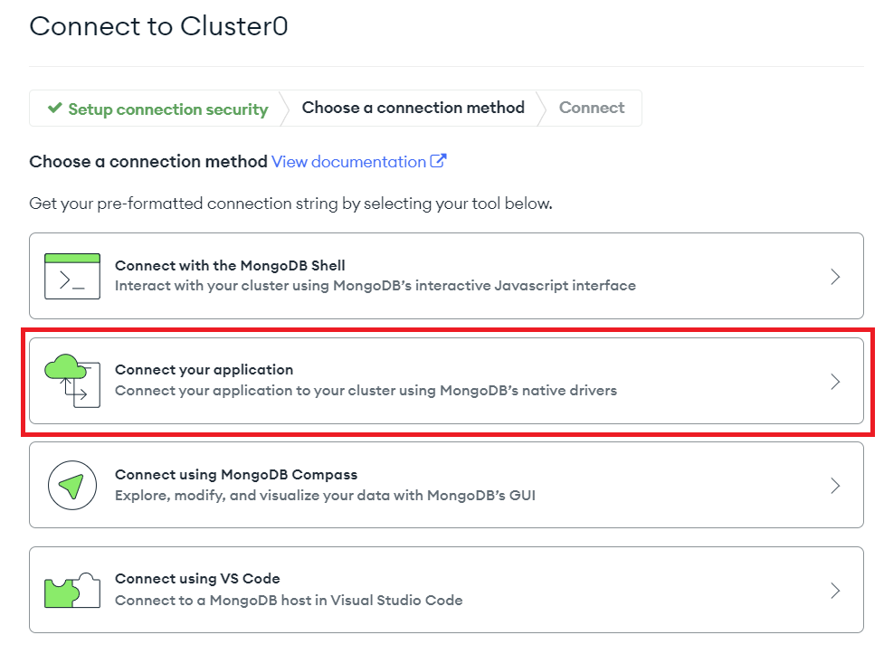
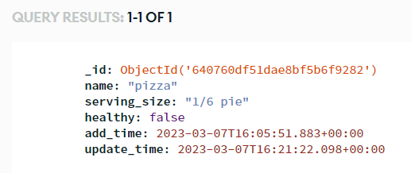

PyMongo
PyMongo is a Python library that provides an interface for using MongoDB. MongoDB is a NoSQL database, which means it does not use Structured Query Language like SQLite. MongoDB is useful for an easy to understand database interface without the rigidity a traditional relational SQL database may have.
Note
Python3 Editor does not provide access to a locally running Mongo database. You can, however, connect to a Mongo cloud database using the Python3 Editor. Mongo provides a free tier for their cloud database service and you can get one by making an account with them.
We have written a short guide on how to properly set up a Mongo cloud instance to work with Python3 Editor. You can check it out here:
Warning
When including private database credentials in your code, make sure you DO NOT make your project "Open Source" when you share it.
Connecting to Your Database
Before we can write or read anything to our new cloud database, we need to actually have our code connect to it. Mongo provides a pre-built connection URL that you can copy and paste into your code. To find this URL, do the following:
1. Find your cloud cluster, and click the Connect button:

2. Click on Connect your application in the window that pops up: 
3. Select Python and 3.11 or later in the dropdowns, and follow the directions about replacing <password> in the provided URL with the password you chose when setting up your cluster's user account:

After you do all that, you can finally paste the code provided into Python3 Editor and test your connection with the database:
Note
For this example and all the following examples, they will provide dummy database URLs that you must replace with the one provided by your Mongo cloud instance.
import pymongo
client = pymongo.MongoClient("mongodb+srv://testuser:<password>@<your cluster>.mongodb.net/?retryWrites=true&w=majority")
# this will fail if the provided URL or database has a problem
client.server_info()
print("Database connected successfully")
If you have done everything correctly, then congratulations! You have successfully created and connected to a MongoDB cloud instance properly configured to work with the Python3 Editor.
Examples
Create a New Document
Now that we have a database up and running, it's time to actually use it! Let's begin by inserting a document into our database:
import datetime
import pymongo
client = pymongo.MongoClient("mongodb+srv://testuser:<password>@<your cluster>.mongodb.net/?retryWrites=true&w=majority")
# Use a database we named "health". If the desired database doesn't exist, it
# will automatically be created for us.
health_db = client.health
# In the "health database", use a collection named "food". This will also be
# created for us if it doesn't exist
food_collection = health_db.food
new_food = {
"name": "pizza",
"serving_size": "1/8 pie",
"healthy": False,
"add_time": datetime.datetime.utcnow()
}
food_id = food_collection.insert_one(new_food).inserted_id
print(food_id)
Output:
640760df51dae8bf5b6f9282
Every document inserted is automatically given an _id field even if we don't give it one. We can see the full document if we look at our database in Mongo Atlas:

Read an Existing Document
Once we have a piece of data in our database, we can read from it by making queries:
import pprint
import pymongo
client = pymongo.MongoClient("mongodb+srv://testuser:<password>@<your cluster>.mongodb.net/?retryWrites=true&w=majority")
health_db = client.health
food_collection = health_db.food
query_cond = {
"name": "pizza"
}
food_item = food_collection.find_one(query_cond)
pprint.pprint(food_item)
Output:
{'_id': ObjectId('640760df51dae8bf5b6f9282'),
'add_time': datetime.datetime(2023, 3, 7, 16, 5, 51, 883000),
'healthy': False,
'name': 'pizza',
'serving_size': '1/8 pie'}
Update an Existing Document
We can change a document already in our database with an update query. Let's update our pizza entry to increase the serving size, and add an update_time field:
import datetime
import pymongo
client = pymongo.MongoClient("mongodb+srv://testuser:<password>@<yourcluster>.mongodb.net/?retryWrites=true&w=majority")
health_db = client.health
food_collection = health_db.food
query_cond = {
"name": "pizza"
}
update_data = {
"$set": {
"serving_size": "1/6 pie",
"update_time": datetime.datetime.utcnow()
}
}
food_item = food_collection.update_one(query_cond, update_data)

Delete a Document
Finally, let's get rid of the pizza document altogether. We can do this with a delete query:
import pymongo
client = pymongo.MongoClient("mongodb+srv://testuser:<password>@<yourcluster>.mongodb.net/?retryWrites=true&w=majority")
health_db = client.health
food_collection = health_db.food
delete_cond = {
"name": "pizza"
}
food_item = food_collection.delete_one(delete_cond)
If we check our database now, we can see that this collection is now fully empty since we deleted the only document from it.
Reference
- PyMongo at readthedocs.io
- MongoDB User Manual at mongodb.com